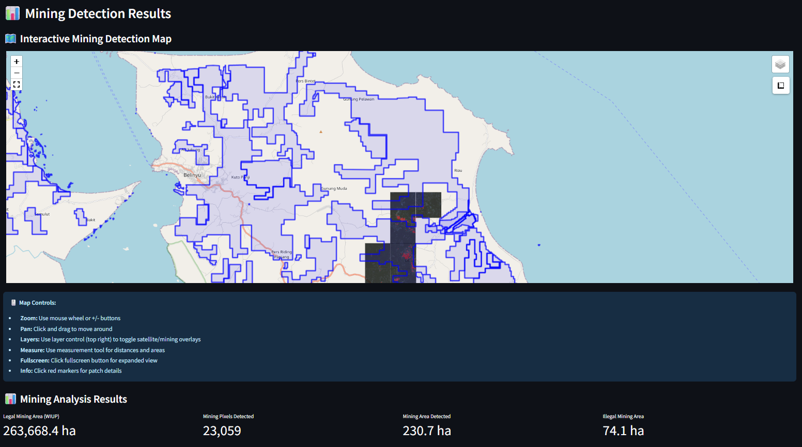
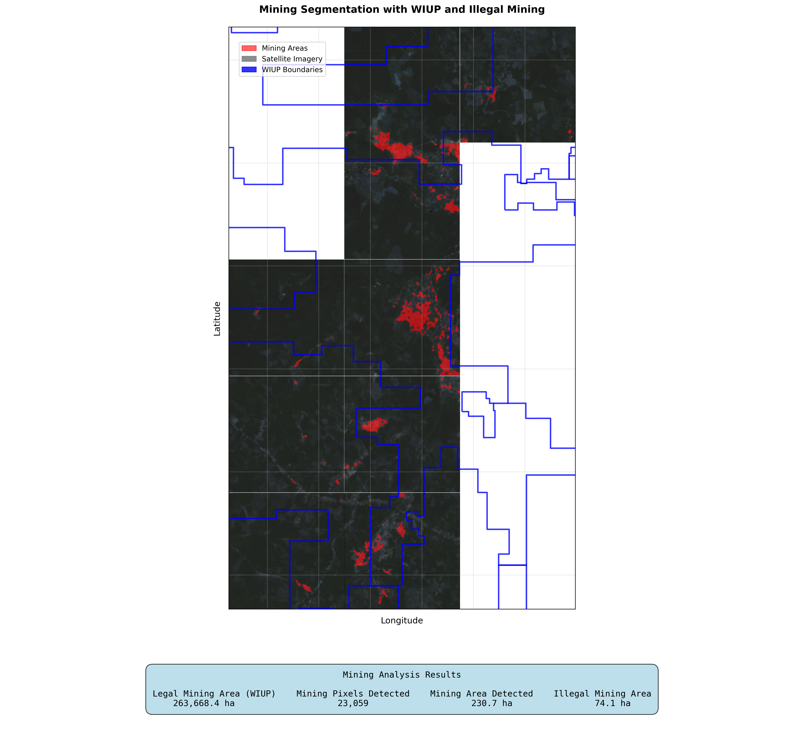

Capability Overview


Deforestation detection, coastal erosion tracking, urban sprawl detection, landfill expansion, flood extent mapping, and many more!
Deploy deep learning models to automatically identify mining activities from satellite imagery with confidence for precise segmentation.
Compare detected mining areas against WIUP (Legal Mining Zone) boundaries to identify illegal mining activities and ensure regulatory compliance.
Explore results through interactive maps with organized layer controls, allowing navigation and analysis of hundreds of satellite image patches.
Process hundreds of georeferenced satellite images simultaneously with automated spatial organization and comprehensive area calculations in hectares.
Business Value
⚖️ Regulatory Compliance
Automated detection of illegal mining activities outside authorized zones, supporting environmental protection and legal compliance monitoring.
🌍 Environmental Monitoring
Track mining expansion patterns and environmental impact assessment with precise area measurements for sustainability reporting.
⚡ Operational Efficiency
Replace manual satellite image analysis with AI-powered automation, reducing analysis time from weeks to hours while improving accuracy.
📈 Evidence-Based Reporting
Generate high-resolution static maps and quantitative reports with precise area calculations for stakeholder presentations and compliance documentation.
Ready to Start Your Satellite Analysis Project?
Let's discuss how satellite imagery analysis can provide insights for your specific use case.